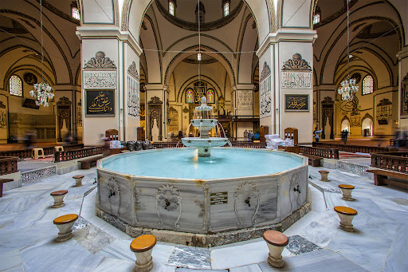

Genel Bilgiler
Bursa, Türkiye'nin Marmara Bölgesi'nde yer alır ve Osmanlı'nın ilk başkentidir. "Yeşil Bursa" olarak bilinir.
Nüfus
2024 yılı verilerine göre nüfusu yaklaşık 3.2 milyondur ve Türkiye'nin en kalabalık 4. şehridir.
1 / 4

Ulucami - Osmanlı'nın İlk Büyük Camisi
2 / 4
Uludağ - Türkiye'nin En Ünlü Kayak Merkezi
3 / 4
Cumalıkızık - Osmanlı’dan Günümüze Gelen Köy
4 / 4

Kozahan - Tarihî İpek Yolu'nun Ticaret Merkezi
Ulu Camii
1399 yılında yapılmış olup Osmanlı cami mimarisinin en önemli örneklerinden biridir.
Uludağ
Türkiye'nin en popüler kayak merkezlerinden biri olup dört mevsim doğa turizmine uygundur.
Cumalıkızık
UNESCO Dünya Mirası listesinde yer alan, Osmanlı döneminden kalma bir köydür.
Koza Han
İpek ticaretinin merkezi olan tarihi bir handır, günümüzde turistik alışveriş noktasıdır.